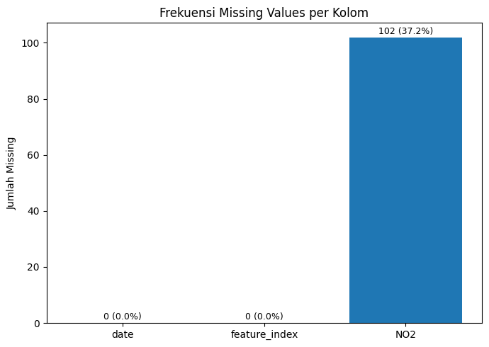
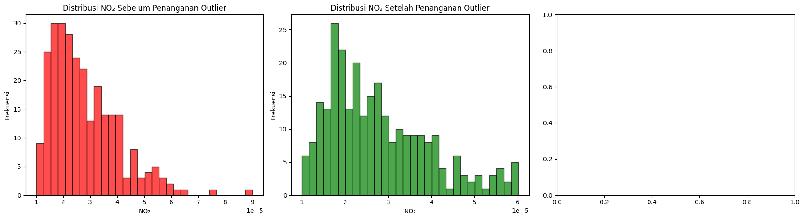
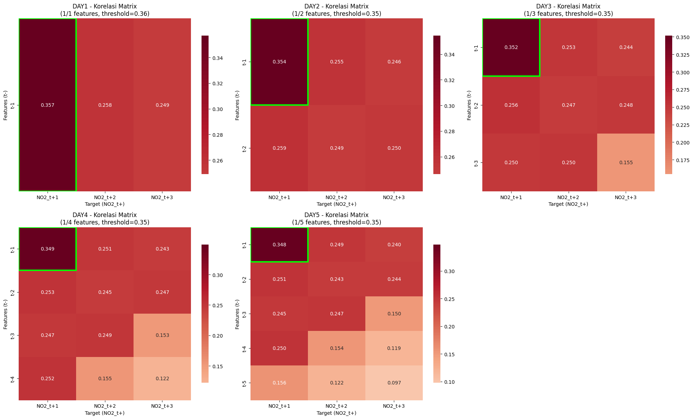

Preprocessing Data NO2 Kabupaten Bangkalan#
Penanganan Missing Values#
import pandas as pd
import matplotlib.pyplot as plt
Penjelasan:
pandas: Library untuk manipulasi dan analisis data
matplotlib.pyplot: Library untuk visualisasi data dan grafik
NO2 = pd.read_csv('no2_results/no2_bangkalan_data.csv')
NO2 = NO2.sort_values(by='date')
NO2
| date | feature_index | NO2 | |
|---|---|---|---|
| 200 | 2024-12-31T00:00:00.000Z | 0 | NaN |
| 197 | 2025-01-01T00:00:00.000Z | 0 | NaN |
| 195 | 2025-01-02T00:00:00.000Z | 0 | NaN |
| 198 | 2025-01-03T00:00:00.000Z | 0 | 0.000040 |
| 194 | 2025-01-04T00:00:00.000Z | 0 | NaN |
| ... | ... | ... | ... |
| 167 | 2025-09-26T00:00:00.000Z | 0 | 0.000019 |
| 161 | 2025-09-27T00:00:00.000Z | 0 | 0.000017 |
| 166 | 2025-09-28T00:00:00.000Z | 0 | 0.000017 |
| 193 | 2025-09-29T00:00:00.000Z | 0 | 0.000028 |
| 192 | 2025-09-30T00:00:00.000Z | 0 | NaN |
274 rows × 3 columns
Penjelasan:
Memuat dataset NO₂ dari file CSV hasil pengambilan data satelit
Mengurutkan data berdasarkan tanggal untuk memastikan urutan temporal yang benar
Menampilkan dataset untuk inspeksi awal
NO2.isnull().sum()
date 0
feature_index 0
NO2 102
dtype: int64
Penjelasan: Menghitung jumlah missing values pada setiap kolom untuk mengidentifikasi tingkat kelengkapan data.
missing_count = NO2.isnull().sum()
missing_percent = (missing_count / len(NO2)) * 100
fig, ax = plt.subplots(figsize=(7,5))
bars = ax.bar(missing_count.index, missing_count)
ax.set_title("Frekuensi Missing Values per Kolom")
ax.set_ylabel("Jumlah Missing")
for i, v in enumerate(missing_count):
ax.text(i, v + 0.5, f"{v} ({missing_percent[i]:.1f}%)",
ha='center', va='bottom', fontsize=9)
plt.tight_layout()
plt.show()
missing_table = pd.DataFrame({
'Missing Count': missing_count,
'Missing Percent (%)': missing_percent.round(2)
})
missing_table
C:\Users\Harits Putra Junaidi\AppData\Local\Temp\ipykernel_19184\800750193.py:12: FutureWarning: Series.__getitem__ treating keys as positions is deprecated. In a future version, integer keys will always be treated as labels (consistent with DataFrame behavior). To access a value by position, use `ser.iloc[pos]`
ax.text(i, v + 0.5, f"{v} ({missing_percent[i]:.1f}%)",

| Missing Count | Missing Percent (%) | |
|---|---|---|
| date | 0 | 0.00 |
| feature_index | 0 | 0.00 |
| NO2 | 102 | 37.23 |
Penjelasan:
Membuat visualisasi bar chart untuk missing values
Menampilkan jumlah dan persentase missing values di atas setiap bar
Membuat tabel summary missing values untuk dokumentasi
NO2 = pd.Series(NO2['NO2'].values, index=NO2['date'], name='NO2')
NO2 = NO2.interpolate(method='linear').bfill()
NO2 = pd.DataFrame(NO2).reset_index()
NO2
| date | NO2 | |
|---|---|---|
| 0 | 2024-12-31T00:00:00.000Z | 0.000040 |
| 1 | 2025-01-01T00:00:00.000Z | 0.000040 |
| 2 | 2025-01-02T00:00:00.000Z | 0.000040 |
| 3 | 2025-01-03T00:00:00.000Z | 0.000040 |
| 4 | 2025-01-04T00:00:00.000Z | 0.000038 |
| ... | ... | ... |
| 269 | 2025-09-26T00:00:00.000Z | 0.000019 |
| 270 | 2025-09-27T00:00:00.000Z | 0.000017 |
| 271 | 2025-09-28T00:00:00.000Z | 0.000017 |
| 272 | 2025-09-29T00:00:00.000Z | 0.000028 |
| 273 | 2025-09-30T00:00:00.000Z | 0.000028 |
274 rows × 2 columns
Penjelasan:
Konversi ke Series: Mengubah data menjadi pandas Series dengan index tanggal
Linear Interpolation: Mengisi missing values dengan interpolasi linear berdasarkan nilai sebelum dan sesudahnya
Backward Fill: Mengisi missing values yang tersisa dengan nilai valid berikutnya
Konversi kembali: Mengubah kembali ke DataFrame dan reset index
Metode ini mempertahankan pola temporal data
NO2.isnull().sum()
date 0
NO2 0
dtype: int64
Penjelasan: Memverifikasi bahwa semua missing values telah berhasil ditangani setelah proses interpolasi dan backward fill.
missing_count = NO2.isnull().sum()
missing_percent = (missing_count / len(NO2)) * 100
missing_table = pd.DataFrame({
'Missing Count': missing_count,
'Missing Percent (%)': missing_percent.round(2)
})
missing_table
| Missing Count | Missing Percent (%) | |
|---|---|---|
| date | 0 | 0.0 |
| NO2 | 0 | 0.0 |
Penjelasan: Membuat tabel summary untuk mendokumentasikan bahwa tidak ada lagi missing values setelah proses imputasi.
NO2 = NO2.drop(columns='date')
NO2 = pd.DataFrame(NO2)
NO2
| NO2 | |
|---|---|
| 0 | 0.000040 |
| 1 | 0.000040 |
| 2 | 0.000040 |
| 3 | 0.000040 |
| 4 | 0.000038 |
| ... | ... |
| 269 | 0.000019 |
| 270 | 0.000017 |
| 271 | 0.000017 |
| 272 | 0.000028 |
| 273 | 0.000028 |
274 rows × 1 columns
Penjelasan:
Menghapus kolom ‘date’ karena tidak diperlukan untuk modeling time series
Memastikan data dalam format DataFrame yang bersih
Memfokuskan data hanya pada nilai NO₂ untuk proses supervised learning
Deteksi Dan Penanganan Outlier Menggunakan LOF#
from sklearn.neighbors import LocalOutlierFactor
import numpy as np
# Deteksi outlier menggunakan LOF pada kolom NO2
lof = LocalOutlierFactor(n_neighbors=20, contamination=0.1)
outlier_labels = lof.fit_predict(NO2[['NO2']])
# Identifikasi outlier
outlier_mask = outlier_labels == -1
n_outliers_before = sum(outlier_mask)
print(f"Outlier terdeteksi: {n_outliers_before} dari {len(NO2)} data ({(n_outliers_before/len(NO2)*100):.2f}%)")
# Visualisasi outlier
fig, axes = plt.subplots(1, 3, figsize=(18, 5))
# Distribusi sebelum penanganan
axes[0].hist(NO2['NO2'], bins=30, alpha=0.7, color='red', edgecolor='black')
axes[0].set_title('Distribusi NO₂ Sebelum Penanganan Outlier')
axes[0].set_xlabel('NO₂')
axes[0].set_ylabel('Frekuensi')
# Penanganan outlier menggunakan IQR capping
Q1 = NO2['NO2'].quantile(0.25)
Q3 = NO2['NO2'].quantile(0.75)
IQR = Q3 - Q1
lower_bound = Q1 - 1.5 * IQR
upper_bound = Q3 + 1.5 * IQR
# Hitung outlier sebelum capping
outlier_count_lower = sum(NO2['NO2'] < lower_bound)
outlier_count_upper = sum(NO2['NO2'] > upper_bound)
print(f"NO2: {outlier_count_lower} nilai < {lower_bound:.6f} dan {outlier_count_upper} nilai > {upper_bound:.6f}")
# Capping outlier
NO2['NO2'] = np.clip(NO2['NO2'], lower_bound, upper_bound)
# Distribusi setelah penanganan
axes[1].hist(NO2['NO2'], bins=30, alpha=0.7, color='green', edgecolor='black')
axes[1].set_title('Distribusi NO₂ Setelah Penanganan Outlier')
axes[1].set_xlabel('NO₂')
axes[1].set_ylabel('Frekuensi')
plt.tight_layout()
plt.show()
# Verifikasi hasil
lof_verify = LocalOutlierFactor(n_neighbors=20, contamination=0.1)
outlier_labels_after = lof_verify.fit_predict(NO2[['NO2']])
n_outliers_after = sum(outlier_labels_after == -1)
# print(f"\nHasil setelah penanganan outlier:")
# print(f"Outlier tersisa: {n_outliers_after} dari {len(NO2)} data ({(n_outliers_after/len(NO2)*100):.2f}%)")
# print(f"Pengurangan outlier: {n_outliers_before - n_outliers_after} data")
# print("✓ Outlier telah ditangani, data siap untuk supervised learning\n")
Outlier terdeteksi: 28 dari 274 data (10.22%)
NO2: 0 nilai < -0.000006 dan 4 nilai > 0.000060

Membentuk data supervised#
output_dir = "no2_results"
day1 = NO2
day2 = NO2
day3 = NO2
day4 = NO2
day5 = NO2
- Membuat data supervised menggunakan t1#
n_lags = 1
n_steps = 3
day1_copy = day1.copy()
for i in range(1, n_lags + 1):
day1_copy[f"t-{i}"] = day1_copy["NO2"].shift(i)
for j in range(1, n_steps + 1):
day1_copy[f"NO2_t+{j}"] = day1_copy["NO2"].shift(-j)
day1_copy = day1_copy.dropna().reset_index(drop=True)
ordered_cols = [f"t-{i}" for i in range(n_lags, 0, -1)] + [f"NO2_t+{j}" for j in range(1, n_steps + 1)]
day1_copy = day1_copy[ordered_cols]
day1_copy.to_csv(f"{output_dir}/day1_supervised.csv", index=False)
print("✅ day1_supervised.csv disimpan:", day1_copy.shape)
day1_copy
✅ day1_supervised.csv disimpan: (270, 4)
| t-1 | NO2_t+1 | NO2_t+2 | NO2_t+3 | |
|---|---|---|---|---|
| 0 | 0.000040 | 0.000040 | 0.000040 | 0.000038 |
| 1 | 0.000040 | 0.000040 | 0.000038 | 0.000036 |
| 2 | 0.000040 | 0.000038 | 0.000036 | 0.000034 |
| 3 | 0.000040 | 0.000036 | 0.000034 | 0.000039 |
| 4 | 0.000038 | 0.000034 | 0.000039 | 0.000022 |
| ... | ... | ... | ... | ... |
| 265 | 0.000022 | 0.000051 | 0.000018 | 0.000019 |
| 266 | 0.000047 | 0.000018 | 0.000019 | 0.000017 |
| 267 | 0.000051 | 0.000019 | 0.000017 | 0.000017 |
| 268 | 0.000018 | 0.000017 | 0.000017 | 0.000028 |
| 269 | 0.000019 | 0.000017 | 0.000028 | 0.000028 |
270 rows × 4 columns
- Membuat data supervised menggunakan t1, t2#
n_lags = 2
day2_copy = day2.copy()
for i in range(1, n_lags + 1):
day2_copy[f"t-{i}"] = day2_copy["NO2"].shift(i)
for j in range(1, n_steps + 1):
day2_copy[f"NO2_t+{j}"] = day2_copy["NO2"].shift(-j)
day2_copy = day2_copy.dropna().reset_index(drop=True)
ordered_cols = [f"t-{i}" for i in range(n_lags, 0, -1)] + [f"NO2_t+{j}" for j in range(1, n_steps + 1)]
day2_copy = day2_copy[ordered_cols]
day2_copy.to_csv(f"{output_dir}/day2_supervised.csv", index=False)
print("✅ day2_supervised.csv disimpan:", day2_copy.shape)
day2_copy
✅ day2_supervised.csv disimpan: (269, 5)
| t-2 | t-1 | NO2_t+1 | NO2_t+2 | NO2_t+3 | |
|---|---|---|---|---|---|
| 0 | 0.000040 | 0.000040 | 0.000040 | 0.000038 | 0.000036 |
| 1 | 0.000040 | 0.000040 | 0.000038 | 0.000036 | 0.000034 |
| 2 | 0.000040 | 0.000040 | 0.000036 | 0.000034 | 0.000039 |
| 3 | 0.000040 | 0.000038 | 0.000034 | 0.000039 | 0.000022 |
| 4 | 0.000038 | 0.000036 | 0.000039 | 0.000022 | 0.000034 |
| ... | ... | ... | ... | ... | ... |
| 264 | 0.000010 | 0.000022 | 0.000051 | 0.000018 | 0.000019 |
| 265 | 0.000022 | 0.000047 | 0.000018 | 0.000019 | 0.000017 |
| 266 | 0.000047 | 0.000051 | 0.000019 | 0.000017 | 0.000017 |
| 267 | 0.000051 | 0.000018 | 0.000017 | 0.000017 | 0.000028 |
| 268 | 0.000018 | 0.000019 | 0.000017 | 0.000028 | 0.000028 |
269 rows × 5 columns
- Membuat data supervised menggunakan t1, t2, t3#
n_lags = 3
day3_copy = day3.copy()
for i in range(1, n_lags + 1):
day3_copy[f"t-{i}"] = day3_copy["NO2"].shift(i)
for j in range(1, n_steps + 1):
day3_copy[f"NO2_t+{j}"] = day3_copy["NO2"].shift(-j)
day3_copy = day3_copy.dropna().reset_index(drop=True)
ordered_cols = [f"t-{i}" for i in range(n_lags, 0, -1)] + [f"NO2_t+{j}" for j in range(1, n_steps + 1)]
day3_copy = day3_copy[ordered_cols]
day3_copy.to_csv(f"{output_dir}/day3_supervised.csv", index=False)
print("✅ day3_supervised.csv disimpan:", day3_copy.shape)
day3_copy
✅ day3_supervised.csv disimpan: (268, 6)
| t-3 | t-2 | t-1 | NO2_t+1 | NO2_t+2 | NO2_t+3 | |
|---|---|---|---|---|---|---|
| 0 | 0.000040 | 0.000040 | 0.000040 | 0.000038 | 0.000036 | 0.000034 |
| 1 | 0.000040 | 0.000040 | 0.000040 | 0.000036 | 0.000034 | 0.000039 |
| 2 | 0.000040 | 0.000040 | 0.000038 | 0.000034 | 0.000039 | 0.000022 |
| 3 | 0.000040 | 0.000038 | 0.000036 | 0.000039 | 0.000022 | 0.000034 |
| 4 | 0.000038 | 0.000036 | 0.000034 | 0.000022 | 0.000034 | 0.000038 |
| ... | ... | ... | ... | ... | ... | ... |
| 263 | 0.000011 | 0.000010 | 0.000022 | 0.000051 | 0.000018 | 0.000019 |
| 264 | 0.000010 | 0.000022 | 0.000047 | 0.000018 | 0.000019 | 0.000017 |
| 265 | 0.000022 | 0.000047 | 0.000051 | 0.000019 | 0.000017 | 0.000017 |
| 266 | 0.000047 | 0.000051 | 0.000018 | 0.000017 | 0.000017 | 0.000028 |
| 267 | 0.000051 | 0.000018 | 0.000019 | 0.000017 | 0.000028 | 0.000028 |
268 rows × 6 columns
- Membuat data supervised menggunakan t1, t2, t3, t4#
n_lags = 4
day4_copy = day4.copy()
for i in range(1, n_lags + 1):
day4_copy[f"t-{i}"] = day4_copy["NO2"].shift(i)
for j in range(1, n_steps + 1):
day4_copy[f"NO2_t+{j}"] = day4_copy["NO2"].shift(-j)
day4_copy = day4_copy.dropna().reset_index(drop=True)
ordered_cols = [f"t-{i}" for i in range(n_lags, 0, -1)] + [f"NO2_t+{j}" for j in range(1, n_steps + 1)]
day4_copy = day4_copy[ordered_cols]
day4_copy.to_csv(f"{output_dir}/day4_supervised.csv", index=False)
print("✅ day4_supervised.csv disimpan:", day4_copy.shape)
day4_copy
✅ day4_supervised.csv disimpan: (267, 7)
| t-4 | t-3 | t-2 | t-1 | NO2_t+1 | NO2_t+2 | NO2_t+3 | |
|---|---|---|---|---|---|---|---|
| 0 | 0.000040 | 0.000040 | 0.000040 | 0.000040 | 0.000036 | 0.000034 | 0.000039 |
| 1 | 0.000040 | 0.000040 | 0.000040 | 0.000038 | 0.000034 | 0.000039 | 0.000022 |
| 2 | 0.000040 | 0.000040 | 0.000038 | 0.000036 | 0.000039 | 0.000022 | 0.000034 |
| 3 | 0.000040 | 0.000038 | 0.000036 | 0.000034 | 0.000022 | 0.000034 | 0.000038 |
| 4 | 0.000038 | 0.000036 | 0.000034 | 0.000039 | 0.000034 | 0.000038 | 0.000042 |
| ... | ... | ... | ... | ... | ... | ... | ... |
| 262 | 0.000011 | 0.000011 | 0.000010 | 0.000022 | 0.000051 | 0.000018 | 0.000019 |
| 263 | 0.000011 | 0.000010 | 0.000022 | 0.000047 | 0.000018 | 0.000019 | 0.000017 |
| 264 | 0.000010 | 0.000022 | 0.000047 | 0.000051 | 0.000019 | 0.000017 | 0.000017 |
| 265 | 0.000022 | 0.000047 | 0.000051 | 0.000018 | 0.000017 | 0.000017 | 0.000028 |
| 266 | 0.000047 | 0.000051 | 0.000018 | 0.000019 | 0.000017 | 0.000028 | 0.000028 |
267 rows × 7 columns
- Membuat data supervised menggunakan t1, t2, t3, t4, t5#
n_lags = 5
day5_copy = day5.copy()
for i in range(1, n_lags + 1):
day5_copy[f"t-{i}"] = day5_copy["NO2"].shift(i)
for j in range(1, n_steps + 1):
day5_copy[f"NO2_t+{j}"] = day5_copy["NO2"].shift(-j)
day5_copy = day5_copy.dropna().reset_index(drop=True)
ordered_cols = [f"t-{i}" for i in range(n_lags, 0, -1)] + [f"NO2_t+{j}" for j in range(1, n_steps + 1)]
day5_copy = day5_copy[ordered_cols]
day5_copy.to_csv(f"{output_dir}/day5_supervised.csv", index=False)
print("✅ day5_supervised.csv disimpan:", day5_copy.shape)
day5_copy
✅ day5_supervised.csv disimpan: (266, 8)
| t-5 | t-4 | t-3 | t-2 | t-1 | NO2_t+1 | NO2_t+2 | NO2_t+3 | |
|---|---|---|---|---|---|---|---|---|
| 0 | 0.000040 | 0.000040 | 0.000040 | 0.000040 | 0.000038 | 0.000034 | 0.000039 | 0.000022 |
| 1 | 0.000040 | 0.000040 | 0.000040 | 0.000038 | 0.000036 | 0.000039 | 0.000022 | 0.000034 |
| 2 | 0.000040 | 0.000040 | 0.000038 | 0.000036 | 0.000034 | 0.000022 | 0.000034 | 0.000038 |
| 3 | 0.000040 | 0.000038 | 0.000036 | 0.000034 | 0.000039 | 0.000034 | 0.000038 | 0.000042 |
| 4 | 0.000038 | 0.000036 | 0.000034 | 0.000039 | 0.000022 | 0.000038 | 0.000042 | 0.000042 |
| ... | ... | ... | ... | ... | ... | ... | ... | ... |
| 261 | 0.000017 | 0.000011 | 0.000011 | 0.000010 | 0.000022 | 0.000051 | 0.000018 | 0.000019 |
| 262 | 0.000011 | 0.000011 | 0.000010 | 0.000022 | 0.000047 | 0.000018 | 0.000019 | 0.000017 |
| 263 | 0.000011 | 0.000010 | 0.000022 | 0.000047 | 0.000051 | 0.000019 | 0.000017 | 0.000017 |
| 264 | 0.000010 | 0.000022 | 0.000047 | 0.000051 | 0.000018 | 0.000017 | 0.000017 | 0.000028 |
| 265 | 0.000022 | 0.000047 | 0.000051 | 0.000018 | 0.000019 | 0.000017 | 0.000028 | 0.000028 |
266 rows × 8 columns
Korelasi lag features dengan NO2#
import matplotlib.pyplot as plt
import seaborn as sns
import numpy as np
def analyze_multioutput_correlations_adaptive(datasets_dict, min_features_per_dataset=1, output_dir="no2_results"):
"""
Analisis korelasi dengan threshold adaptif untuk memastikan setiap dataset memiliki minimal features
"""
results = {}
optimal_thresholds = {}
for dataset_name, file_path in datasets_dict.items():
df = pd.read_csv(file_path)
feature_columns = [col for col in df.columns if col.startswith('t-')]
target_columns = [col for col in df.columns if col.startswith('NO2_t+')]
# Kumpulkan semua korelasi
all_correlations = []
for feature in feature_columns:
for target in target_columns:
corr = abs(df[feature].corr(df[target]))
all_correlations.append(corr)
# Urutkan dari tertinggi ke terendah
all_correlations.sort(reverse=True)
if len(all_correlations) >= min_features_per_dataset:
threshold = all_correlations[min_features_per_dataset-1]
threshold = max(threshold, 0.2)
else:
threshold = 0.2
optimal_thresholds[dataset_name] = threshold
print(f"{dataset_name.upper()}: threshold = {threshold:.3f} ({threshold*100:.1f}%)")
fig, axes = plt.subplots(2, 3, figsize=(20, 12))
axes = axes.flatten()
for idx, (dataset_name, file_path) in enumerate(datasets_dict.items()):
if idx >= len(axes):
break
threshold = optimal_thresholds[dataset_name]
print(f"\n--- ANALISIS DATASET {dataset_name.upper()} (Threshold: {threshold:.3f}) ---")
df = pd.read_csv(file_path)
feature_columns = [col for col in df.columns if col.startswith('t-')]
target_columns = [col for col in df.columns if col.startswith('NO2_t+')]
correlations = {}
selected_features = []
correlation_matrix = []
for feature in feature_columns:
feature_correlations = {}
feature_selected = False
for target in target_columns:
correlation = df[feature].corr(df[target])
abs_correlation = abs(correlation)
feature_correlations[target] = {
'correlation': correlation,
'abs_correlation': abs_correlation
}
if abs_correlation >= threshold:
feature_selected = True
correlation_matrix.append([feature, target, correlation])
correlations[feature] = feature_correlations
if feature_selected:
selected_features.append(feature)
status = "DIPILIH"
symbol = "🟢"
else:
status = "TIDAK DIPILIH"
symbol = "🔴"
avg_corr = np.mean([v['abs_correlation'] for v in feature_correlations.values()])
max_corr = max([v['abs_correlation'] for v in feature_correlations.values()])
print(f" {symbol} {feature}: avg={avg_corr:.3f}, max={max_corr:.3f} - {status}")
# pilih yang korelasi tertinggi
if not selected_features and feature_columns:
# Cari feature dengan korelasi maksimum tertinggi
best_feature = None
best_max_corr = 0
for feature in feature_columns:
max_corr = max([correlations[feature][target]['abs_correlation']
for target in target_columns])
if max_corr > best_max_corr:
best_max_corr = max_corr
best_feature = feature
if best_feature:
selected_features.append(best_feature)
print(f" Dipilih: {best_feature} (korelasi tertinggi: {best_max_corr:.3f})")
# Filter dataset
final_columns = selected_features + target_columns
df_filtered = df[final_columns].copy()
# Simpan dataset yang sudah difilter
filtered_filename = f'{output_dir}/{dataset_name}_supervised_filtered.csv'
df_filtered.to_csv(filtered_filename, index=False)
# Visualisasi heatmap
if correlation_matrix:
corr_df = pd.DataFrame(correlation_matrix, columns=['Feature', 'Target', 'Correlation'])
pivot_table = corr_df.pivot(index='Feature', columns='Target', values='Correlation')
ax = axes[idx]
sns.heatmap(pivot_table, annot=True, cmap='RdBu_r', center=0,
ax=ax, cbar_kws={'shrink': 0.8}, fmt='.3f')
ax.set_title(f'{dataset_name.upper()} - Korelasi Matrix\n({len(selected_features)}/{len(feature_columns)} features, threshold={threshold:.2f})')
ax.set_xlabel('Target (NO2_t+)')
ax.set_ylabel('Features (t-)')
for i, feature in enumerate(pivot_table.index):
if feature in selected_features:
for j in range(len(pivot_table.columns)):
val = pivot_table.iloc[i, j]
if abs(val) >= threshold:
ax.add_patch(plt.Rectangle((j, i), 1, 1, fill=False,
edgecolor='lime', linewidth=3))
# Simpan hasil
results[dataset_name] = {
'original_file': file_path,
'filtered_file': filtered_filename,
'feature_columns': feature_columns,
'target_columns': target_columns,
'selected_features': selected_features,
'correlations': correlations,
'n_features_total': len(feature_columns),
'n_features_selected': len(selected_features),
'threshold_used': threshold,
'filtered_df': df_filtered
}
print(f" Dataset filtered disimpan: {filtered_filename}")
print(f" Features terpilih: {len(selected_features)}/{len(feature_columns)}")
# Hapus subplot yang tidak digunakan
for idx in range(len(datasets_dict), len(axes)):
axes[idx].remove()
plt.tight_layout()
plt.show()
return results
# Dataset yang akan dianalisis
supervised_datasets = {
'day1': f'{output_dir}/day1_supervised.csv',
'day2': f'{output_dir}/day2_supervised.csv',
'day3': f'{output_dir}/day3_supervised.csv',
'day4': f'{output_dir}/day4_supervised.csv',
'day5': f'{output_dir}/day5_supervised.csv'
}
correlation_results = analyze_multioutput_correlations_adaptive(supervised_datasets, min_features_per_dataset=1, output_dir=output_dir)
DAY1: threshold = 0.357 (35.7%)
DAY2: threshold = 0.354 (35.4%)
DAY3: threshold = 0.352 (35.2%)
DAY4: threshold = 0.349 (34.9%)
DAY5: threshold = 0.348 (34.8%)
--- ANALISIS DATASET DAY1 (Threshold: 0.357) ---
🟢 t-1: avg=0.288, max=0.357 - DIPILIH
Dataset filtered disimpan: no2_results/day1_supervised_filtered.csv
Features terpilih: 1/1
--- ANALISIS DATASET DAY2 (Threshold: 0.354) ---
🔴 t-2: avg=0.253, max=0.259 - TIDAK DIPILIH
🟢 t-1: avg=0.285, max=0.354 - DIPILIH
Dataset filtered disimpan: no2_results/day2_supervised_filtered.csv
Features terpilih: 1/2
--- ANALISIS DATASET DAY3 (Threshold: 0.352) ---
🔴 t-3: avg=0.218, max=0.250 - TIDAK DIPILIH
🔴 t-2: avg=0.250, max=0.256 - TIDAK DIPILIH
🟢 t-1: avg=0.283, max=0.352 - DIPILIH
Dataset filtered disimpan: no2_results/day3_supervised_filtered.csv
Features terpilih: 1/3
--- ANALISIS DATASET DAY4 (Threshold: 0.349) ---
🔴 t-4: avg=0.177, max=0.252 - TIDAK DIPILIH
🔴 t-3: avg=0.216, max=0.249 - TIDAK DIPILIH
🔴 t-2: avg=0.248, max=0.253 - TIDAK DIPILIH
🟢 t-1: avg=0.281, max=0.349 - DIPILIH
Dataset filtered disimpan: no2_results/day4_supervised_filtered.csv
Features terpilih: 1/4
--- ANALISIS DATASET DAY5 (Threshold: 0.348) ---
🔴 t-5: avg=0.125, max=0.156 - TIDAK DIPILIH
🔴 t-4: avg=0.174, max=0.250 - TIDAK DIPILIH
🔴 t-3: avg=0.214, max=0.247 - TIDAK DIPILIH
🔴 t-2: avg=0.246, max=0.251 - TIDAK DIPILIH
🟢 t-1: avg=0.279, max=0.348 - DIPILIH
Dataset filtered disimpan: no2_results/day5_supervised_filtered.csv
Features terpilih: 1/5

# import matplotlib.pyplot as plt
# import seaborn as sns
# import numpy as np
# def analyze_multioutput_correlations(datasets_dict, correlation_threshold=0.5, output_dir="no2_results"):
# results = {}
# fig, axes = plt.subplots(2, 3, figsize=(20, 12))
# axes = axes.flatten()
# for idx, (dataset_name, file_path) in enumerate(datasets_dict.items()):
# if idx >= len(axes):
# break
# print(f"\n--- ANALISIS DATASET {dataset_name.upper()} ---")
# # Baca dataset
# df = pd.read_csv(file_path)
# # Identifikasi kolom features dan targets
# feature_columns = [col for col in df.columns if col.startswith('t-')]
# target_columns = [col for col in df.columns if col.startswith('NO2_t+')]
# if not feature_columns or not target_columns:
# print(f"Dataset {dataset_name} tidak memiliki format yang sesuai")
# continue
# print(f"Features: {feature_columns}")
# print(f"Targets: {target_columns}")
# # Hitung korelasi untuk setiap kombinasi feature-target
# correlations = {}
# selected_features = []
# correlation_matrix = []
# print(f"\nANALISIS KORELASI (Threshold: {correlation_threshold*100}%):")
# print("-" * 70)
# for feature in feature_columns:
# feature_correlations = {}
# feature_selected = False
# for target in target_columns:
# correlation = df[feature].corr(df[target])
# abs_correlation = abs(correlation)
# feature_correlations[target] = {
# 'correlation': correlation,
# 'abs_correlation': abs_correlation
# }
# # Cek korelasi memenuhi threshold
# if abs_correlation >= correlation_threshold:
# feature_selected = True
# # Untuk visualisasi
# correlation_matrix.append([feature, target, correlation])
# correlations[feature] = feature_correlations
# if feature_selected:
# selected_features.append(feature)
# status = "DIPILIH"
# symbol = "🟢"
# else:
# status = "TIDAK DIPILIH"
# symbol = "🔴"
# avg_corr = np.mean([v['abs_correlation'] for v in feature_correlations.values()])
# max_corr = max([v['abs_correlation'] for v in feature_correlations.values()])
# print(f"{symbol} {feature}: avg={avg_corr:.3f}, max={max_corr:.3f} - {status}")
# # Filter dataset berdasarkan selected features
# final_columns = selected_features + target_columns
# df_filtered = df[final_columns].copy()
# # Simpan dataset yang sudah difilter
# filtered_filename = f'{output_dir}/{dataset_name}_supervised_filtered.csv'
# df_filtered.to_csv(filtered_filename, index=False)
# # Visualisasi heatmap korelasi
# if correlation_matrix:
# corr_df = pd.DataFrame(correlation_matrix, columns=['Feature', 'Target', 'Correlation'])
# pivot_table = corr_df.pivot(index='Feature', columns='Target', values='Correlation')
# # Plot heatmap
# ax = axes[idx]
# sns.heatmap(pivot_table, annot=True, cmap='RdBu_r', center=0,
# ax=ax, cbar_kws={'shrink': 0.8}, fmt='.3f')
# ax.set_title(f'{dataset_name.upper()} - Korelasi Matrix\n({len(selected_features)}/{len(feature_columns)} features terpilih)')
# ax.set_xlabel('Target (NO2_t+)')
# ax.set_ylabel('Features (t-)')
# # garis threshold
# for i in range(len(pivot_table.index)):
# for j in range(len(pivot_table.columns)):
# val = pivot_table.iloc[i, j]
# if abs(val) >= correlation_threshold:
# ax.add_patch(plt.Rectangle((j, i), 1, 1, fill=False,
# edgecolor='lime', linewidth=3))
# # Simpan hasil
# results[dataset_name] = {
# 'original_file': file_path,
# 'filtered_file': filtered_filename,
# 'feature_columns': feature_columns,
# 'target_columns': target_columns,
# 'selected_features': selected_features,
# 'correlations': correlations,
# 'n_features_total': len(feature_columns),
# 'n_features_selected': len(selected_features),
# 'filtered_df': df_filtered
# }
# print(f"Dataset filtered disimpan: {filtered_filename}")
# print(f"Features terpilih: {len(selected_features)}/{len(feature_columns)}")
# for idx in range(len(datasets_dict), len(axes)):
# axes[idx].remove()
# plt.tight_layout()
# plt.show()
# return results
# # Dataset yang akan dianalisis
# supervised_datasets = {
# 'day1': f'{output_dir}/day1_supervised.csv',
# 'day2': f'{output_dir}/day2_supervised.csv',
# 'day3': f'{output_dir}/day3_supervised.csv',
# 'day4': f'{output_dir}/day4_supervised.csv',
# 'day5': f'{output_dir}/day5_supervised.csv'
# }
# # korelasi dengan threshold 0.5
# correlation_threshold = 0.5
# correlation_results = analyze_multioutput_correlations(supervised_datasets, correlation_threshold, output_dir)